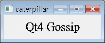
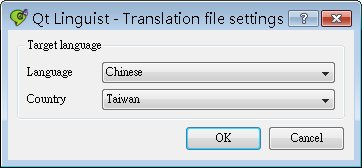
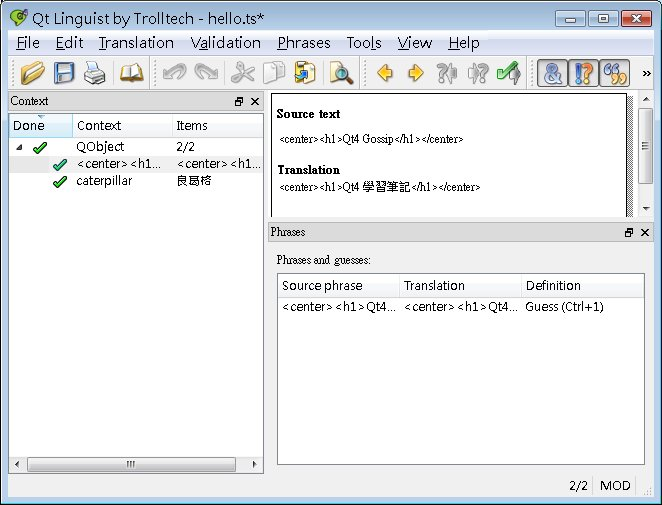
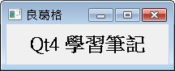

您可以在應用程式中的一些文字位置撰寫預設語系文字，例如英語系文字，若要改變整個應用程式中的文字為另一個語系的文字，再提供qm檔來進行翻譯，要擁有這個功能，首要條件是在您的應用程式中：
以 簡 單的顯示中文（使用 Unicode 轉換） 為例，示範如何讓它擁有置換.qm檔即可翻譯應用程式：
#include <QApplication> 要翻譯的文字，一定要直接撰寫在tr()之中，tr()之中不得使用變數，因為稍後使用lupdate工具程式處理時，會無法找出需要翻譯的文字，例如以下的寫法就不行： QString name = "caterpillar";
label->setWindowTitle(name); QTranslator的load()方法設置為hello，這預設會去尋找hello.qm檔，檔案中包括要進行翻譯的文字，上面的應用程式已經可以執行，在不提供.qm檔案時，預設就是顯示原始程式碼中的文字：  接著，確定在您的.pro檔案中，設置原始檔案名稱與即將產生的.ts檔案名稱： SOURCES += main.cpp
TRANSLATIONS += hello.ts 如此就可以直接使用Qt附的lupdate工具程式來自動產生.ts檔案，指令為： lupdate -verbose yourApp.pro
.ts檔案的格式內容為XML檔案，您可以直接編輯它： <?xml version="1.0" encoding="utf-8"?>
<!DOCTYPE TS><TS version="1.1"> <context> <name>QObject</name> <message> <location filename="main.cpp" line="15"/> <source><center><h1>Qt4 Gossip</h1></center></source> <translation type="unfinished"></translation> </message> <message> <location filename="main.cpp" line="17"/> <source>caterpillar</source> <translation type="unfinished"></translation> </message> </context> </TS> 但更簡單的方法是使用Qt附的linguist： linguist hello.ts
這會出現linguist視窗程式，若要中文，可以執行「Edit/Translation File Settings」，設定為中文語系編輯：  接著可以在右上窗格進行翻譯的文字編輯，例如：  修改所有要翻譯的文字之後進行儲存，原本的.ts檔將修改為如下： <?xml version="1.0" encoding="utf-8"?> <!DOCTYPE TS><TS version="1.1" language="zh_TW"> <defaultcodec></defaultcodec> <context> <name>QObject</name> <message> <location filename="main.cpp" line="15"/> <source><center><h1>Qt4 Gossip</h1></center></source> <translation><center><h1>Qt4 學習筆記</h1></center></translation> </message> <message> <location filename="main.cpp" line="17"/> <source>caterpillar</source> <translation>良葛格</translation> </message> </context> </TS> 接著使用Qt的lrelease工具程式，將.ts檔轉換為.qm檔： lrelease hello.ts
接著啟動應用程式，QTranslator可以載入hello.qm檔的內容，並將所有tr()中的文字作置換，畫面如下：  |